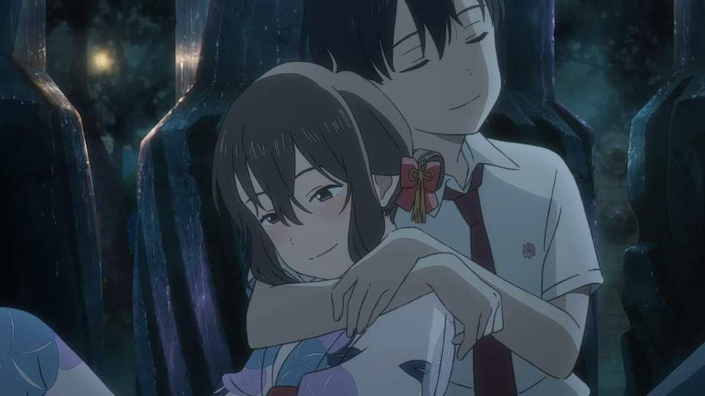

Olhos de gato

O segundo longa-metragem da Studio Colorido, Olhos de Gato, conta a história de Miyo Sasaki, também conhecida como Muge, uma menina que sonha em conquistar Kento Hinode, seu grande amor. Ela tenta fazer com que ele a note todos os dias na escola, apenas para ser em vão.
Contudo, Muge esconde um segredo que nunca contou à ninguém: ela consegue se transformar em uma gata branca. Ela descobriu ao achar uma máscara de gato que, ao colocar, a faz virar no animal e usa sua nova forma para visitar Kento todas as tardes e noites, mesmo não podendo falar, ela pde ficar ao lado dele. Porém, existe uma probabilidade de que ela nunca possa mais voltar a ser humana caso ela abuse do uso da máscara. Além disso, Muge ainda tem que aturar as tranformações em sua própria casa, já que seus pais estão se separando, o que faz com que Muge use ainda mais a máscara para ficar longe de casa.Disponível na Netflix